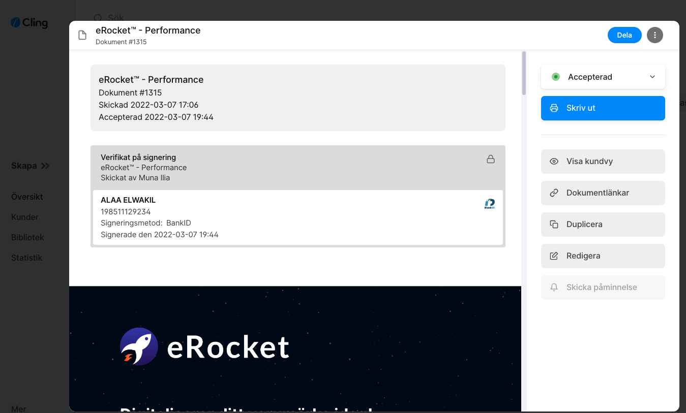

Livsverket
Livsverket
En verklig satsning
Investering, team, produkt och ett digitalt renommé.
Börja i tidslinjenLevande digital dokumentation · ärende 5000-K613147-26 · yrkande 50 miljoner kronor
Det här är ingången till bevisningen om hur William Rydh, en person som varit med och format delar av den digitala marknadsföringsbranschen i Borås, enligt dokumentationen gjordes till bärare av en bild som underlagen inte stödjer. Intervjun med reportern Matilda Spetz är ett centralt underlag för vad BT fick veta före publicering. Fotograf Johan Valkonen var också på plats. Följ resan visuellt och gå sedan vidare till artiklarna, tidslinjen, fullarkivet, skadeunderlagen eller den juridiska dokumentationen.
Visuell resa
Bilder först. Kort kontext. Klicka vidare för att kontrollera respektive underlag.
Livsverket
Investering, team, produkt och ett digitalt renommé.
Börja i tidslinjen Modellen
Modellen
Kunden skulle inte bära resultatrisken.
Förstå modellen Produkten
Produkten
Kampanjer, sökord och Google-förändring gick att granska.
Se produktspåret Resultaten
Resultaten
Synlighet och mätbar prestation, dokumenterad i underlagen.
Öppna bilden
05 · MotbildenUnderlagen pekar på en större ansvarskedja än den publicerade bilden.
Lyssna på intervjun 06 · Följden
06 · Följden
BT:s egna artiklar användes i ett Gota Media-kopplat angrepp på Reco.
Se skadanVälj spår
Startsidan är kartan. Välj det spår som bäst svarar på frågan du har.
Före-bilden, intervjun, publiceringarna, följderna och processen.
02BT:s centrala formuleringar kopplas till originalljud och jämförbara dokument.
03Varför tjänsten var byggd för att kunden inte skulle betala före prestation.
04Alla kuraterade bevisposter och 81 klickbara filer i fullarkivet.
05Värdering, inkomstfall, konkurser, Gota Media/Reco-spåret och 50-miljonersyrkandet.
06Polisanmälan, kompletteringar, JK-beslut, enskilt åtal och ansvarskedja.
07Reportrar, fotograf, ansvarig utgivare, redaktionell ledning och Gota Media-spåret.
08Advokatversionen med yrkanden, gärningskärna, skadebild och full PDF.
Bevisbilder
Det här är bara ett urval. Hela materialet ligger i bevisdatabasen.
Slutsats
Den fulla dokumentationen finns nu uppdelad så att läsaren kan följa resan visuellt, kontrollera varje artikel, öppna varje fil och förstå skadan separat.
Gå till fullarkivet